Design through testing
The glider taught me that small changes in balance and launch conditions can noticeably affect flight. Repeated trials helped turn an observation into a practical adjustment.
Club leadership · PLTW Aerospace Engineering
Exploring flight through model rockets, airfoil testing, glider design, and simulated navigation.

Rocket Science Club and PLTW Aerospace Engineering gave me two complementary ways to explore flight. In the club, I built rockets and helped other students learn. In class, I used design tools, physical models, test data, and simulation to understand how engineering decisions affect performance.
01 / Rocket Science Club
I served as secretary in 10th and 11th grade and president in 12th grade. I developed and taught lessons on rocketry and flight paths to more than 30 students, adapting NASA JPL resources into hands-on activities with paper and soda-bottle rockets.
I also designed and launched a model rocket named SNARKY. My résumé records an altitude of over 400 meters. Together, the build work and club activities helped me practice both engineering and explaining technical ideas to others.
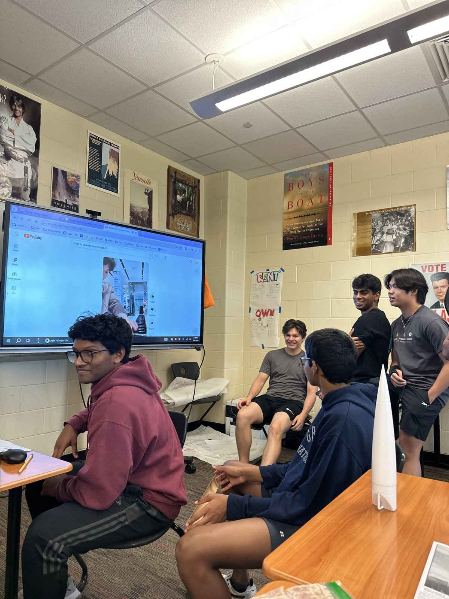
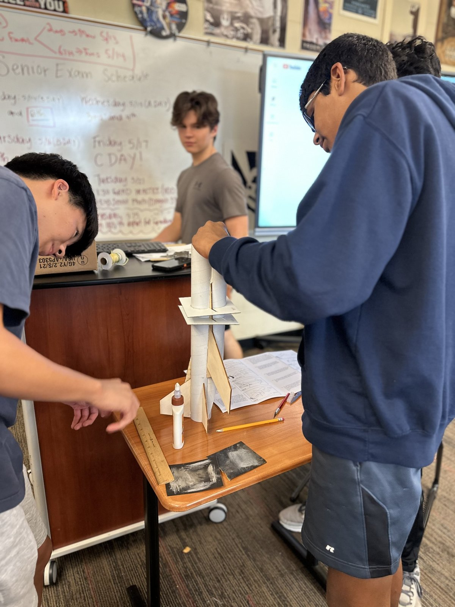
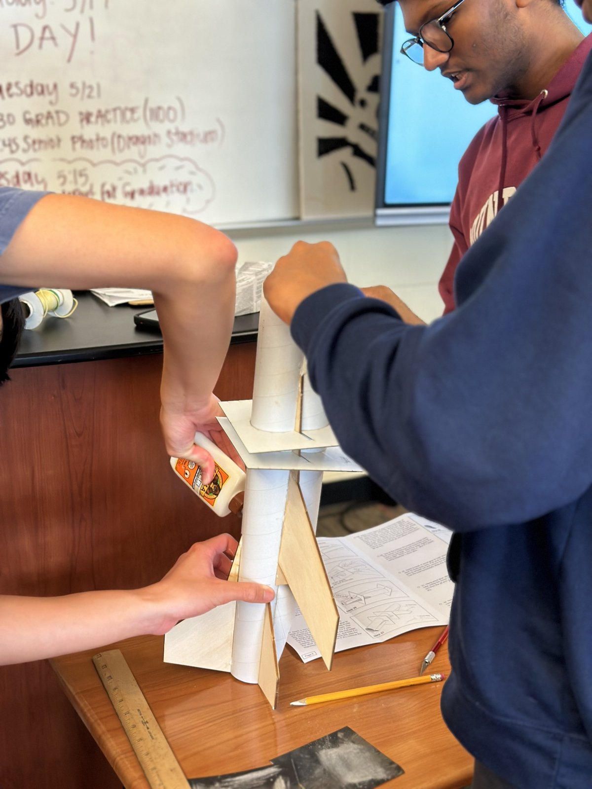
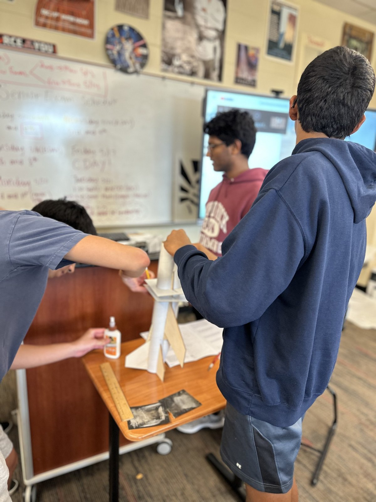
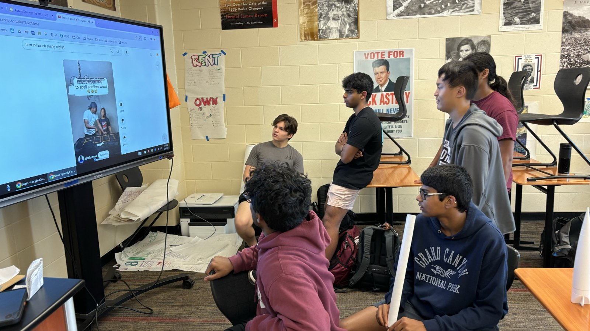
Video records from our outdoor rocket activities.
02 / PLTW Aerospace Engineering
I documented an airfoil profile, created a multiview CAD drawing, and evaluated lift and drag across angles of attack. The presentation connects the designed shape to a physical 3D-printed model and the resulting performance plots.
For the low-camber shape I tested, my summary identified approximately 20° as the best angle of attack by lift-to-drag ratio under the tested conditions. I also noted worn wind-tunnel sensors as a limitation. This highlighted how the quality of a measurement affects the confidence I can place in a design decision.
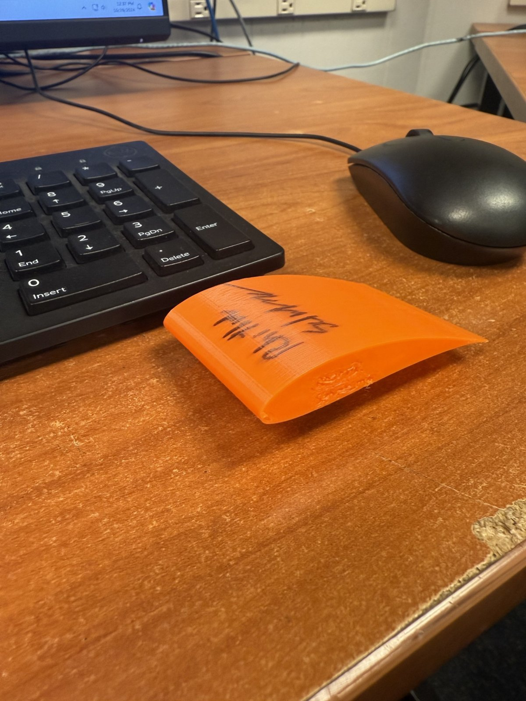
03 / PLTW Aerospace Engineering
I used AERY to explore glider geometry and develop a design before building a balsa model. The design screenshots document the wing and tail layout, while the presentation includes build photos, flight trials, and competition data.
During testing, the glider tipped to the right, which I attributed to uneven sanding. Adding a small amount of putty to the lighter wing improved the balance and stability. Across approximately nine flight trials, I refined the trim, putty placement, launch angle, and launch velocity. The final glider reached the maximum distance available in our hallway test space.
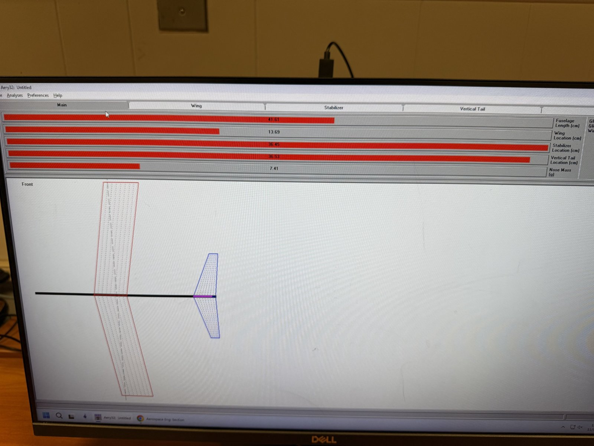
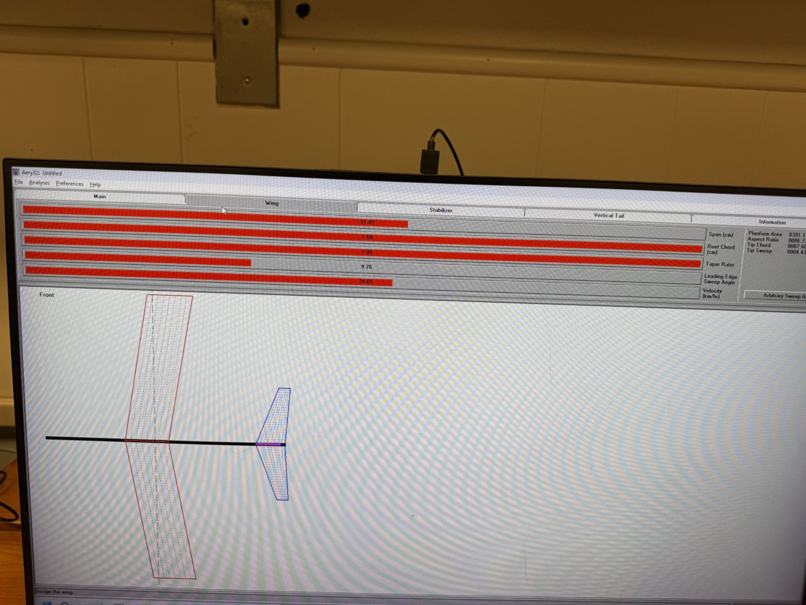
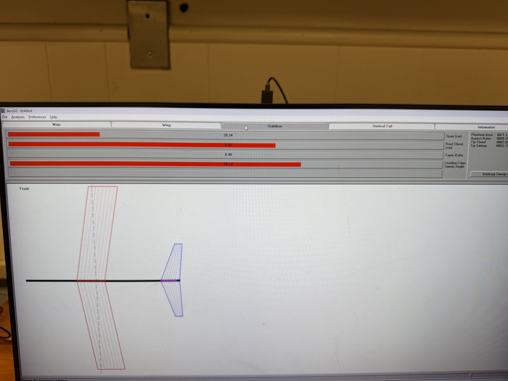
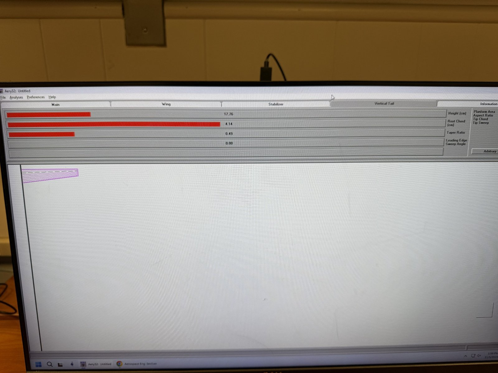
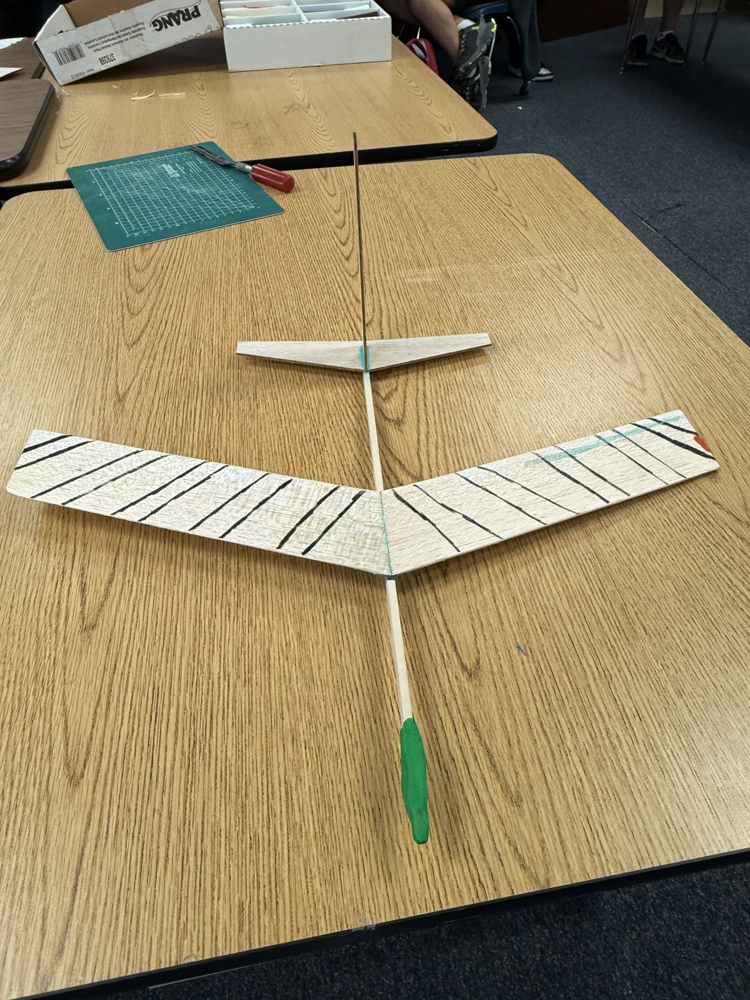
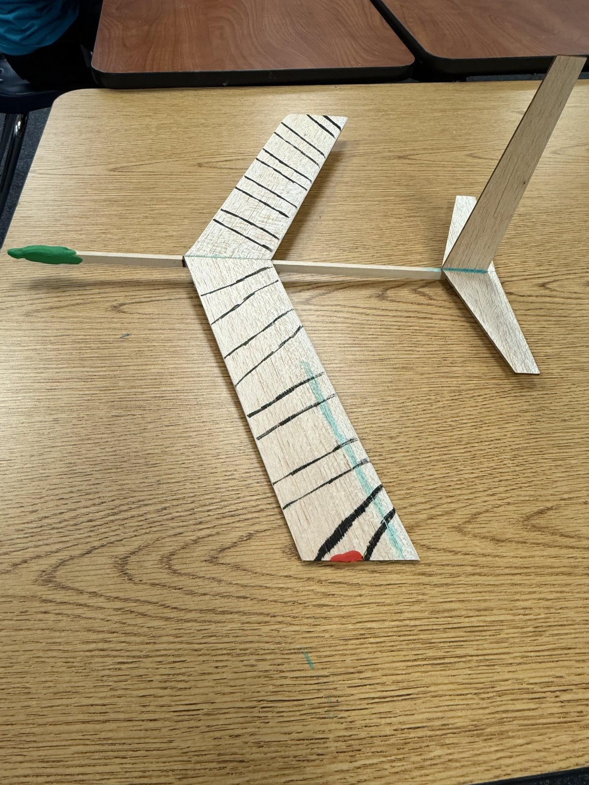
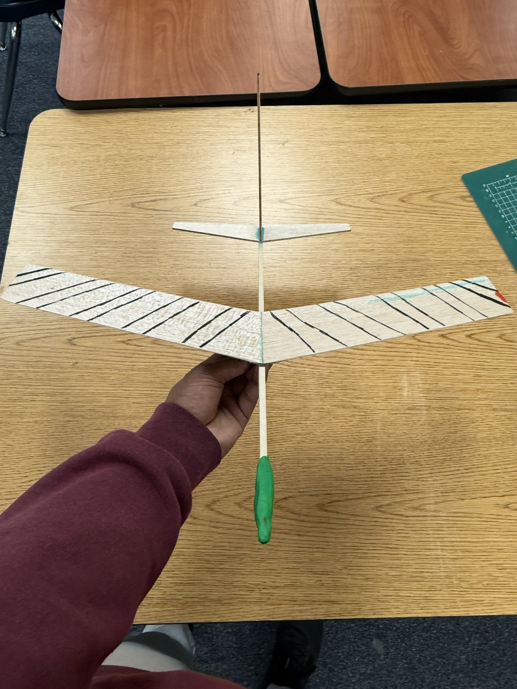
Reflection
The glider taught me that small changes in balance and launch conditions can noticeably affect flight. Repeated trials helped turn an observation into a practical adjustment.
Moving from CAD and AERY to physical airfoils and gliders showed me why simulation, fabrication quality, and measurements need to be considered together.
Plots, drawings, flight tables, and presentations helped me explain not only what I built, but also how I evaluated it and why I made changes.
Teaching club members strengthened my communication and leadership. Adapting rocketry concepts into hands-on activities gave me practice helping others participate and learn.